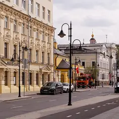

У метро · ЦАО
Куда сходить у метро «Третьяковская»
Для 4 мест из нашего каталога ближайшая станция — «Третьяковская» (ЦАО): 3 ресторана или кафе и 1 бар. Например, «Рихтер», «Евгенич» и «Pepe Nero». 4 готовых плана проходят через эту станцию — например, «Пятницкая и народное караоке», с маршрутом пешком между точками.
- 4 места
- 4 плана
Места у метро «Третьяковская» 4
ул. Пятницкая, 42
Отель-ресторан с садом, вермутерией и галереей в Замоскворечье. 9–00.
Пятницкая ул., 30, стр. 1
Новое
Советская рюмочная в духе 80-х: с вс по чт «народное караоке» с ведущим, в пт–сб дискотека с хоровым пением, по вт и ср — стендап. Настойки, закуски, до 6 утра.
Кадашёвская наб., 26
Ресторан в стиле альпийского шале с видом на Водоотводный канал, в пяти минутах от Кремля.
Пятницкая ул., 20
Нормандское бистро с сидрерией: пироги, питивье и десятки сидров.
Готовые планы 4

- Пятницкая улица · Улица · м. Новокузнецкая
- 5 минут пешкомЕвгенич · Караоке-рюмочная
Пройтись по вечерней Пятницкой мимо купеческих домов, а потом в рюмочную «Евгенич» в духе 80-х: караоке с ведущим, хоровое пение и настойки до 6 утра.
Открыть план: Пятницкая и народное караокеПозвать сюда: Пятницкая и народное караоке
Фото: Retired electrician, CC0 · Wikimedia Commons
- Марфо-Мариинская обитель · Обитель · м. Полянка
- 5 минут пешкомРихтер · Ресторан с садом
Белоснежная обитель Щусева на Ордынке и обед в ресторане с садом «Рихтер».
Открыть план: Ордынка и ресторан с садомПозвать сюда: Ордынка и ресторан с садом
Фото: NVO, CC BY 2.5 · Wikimedia Commons
- Третьяковка на Кадашёвской · Музей · м. Полянка
- 14 минут пешкомРихтер · Ресторан с садом
Большая выставка в новом корпусе галереи, а потом обед в отеле-ресторане с садом на Пятницкой.
Открыть план: Третьяковка на Кадашёвской и РихтерПозвать сюда: Третьяковка на Кадашёвской и Рихтер
Фото: Ludvig14, CC BY-SA 4.0 · Wikimedia Commons
- МОХ · Галерея и флористика · м. Полянка
- 9 минут пешкомРихтер · Ресторан с садом
Ближе к вечеру собираете свой букет с флористом в МОХ у Третьяковки (до 20:00), а потом ужин в «Рихтере» — отеле-ресторане с садом и вермутерией в Замоскворечье.
Открыть план: Свой букет и ужин в РихтереПозвать сюда: Свой букет и ужин в Рихтере


Как позвать
- Выбери план, место или событие — в карточке адрес, цены и маршрут в Яндекс Картах.
- Нажми «Позвать сюда» — соберётся приглашение-игра для свидания или голосование для компании.
- Отправь ссылку в любой мессенджер: тебе ответят, а компания отметит, куда и когда может. Бесплатно и без регистрации.